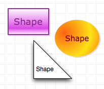

Shapes

A shape is a two-dimensional object that can contain text, and can be filled with colors and images. You can make shapes with the Shape tool or the Pen tool, or drag them from stencils. You can also use the Text tool to create shape objects that are especially useful for containing text.